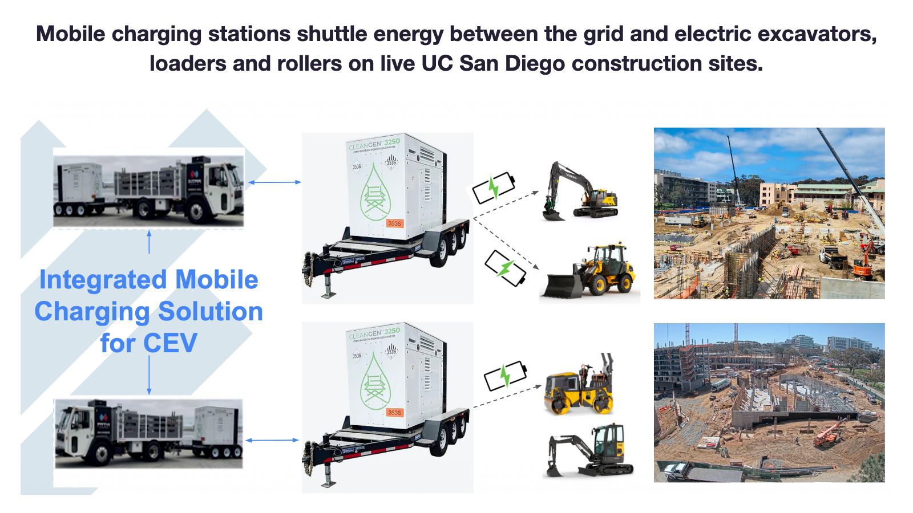
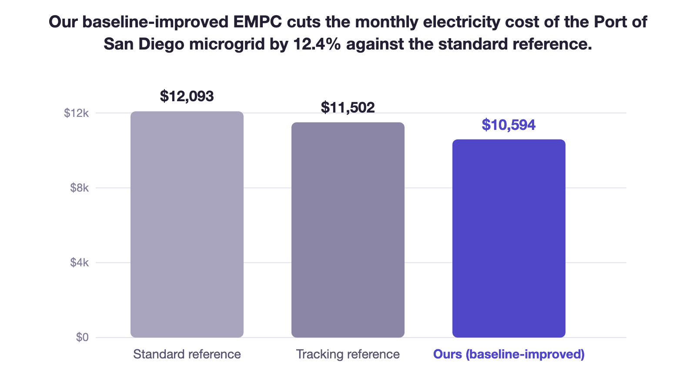
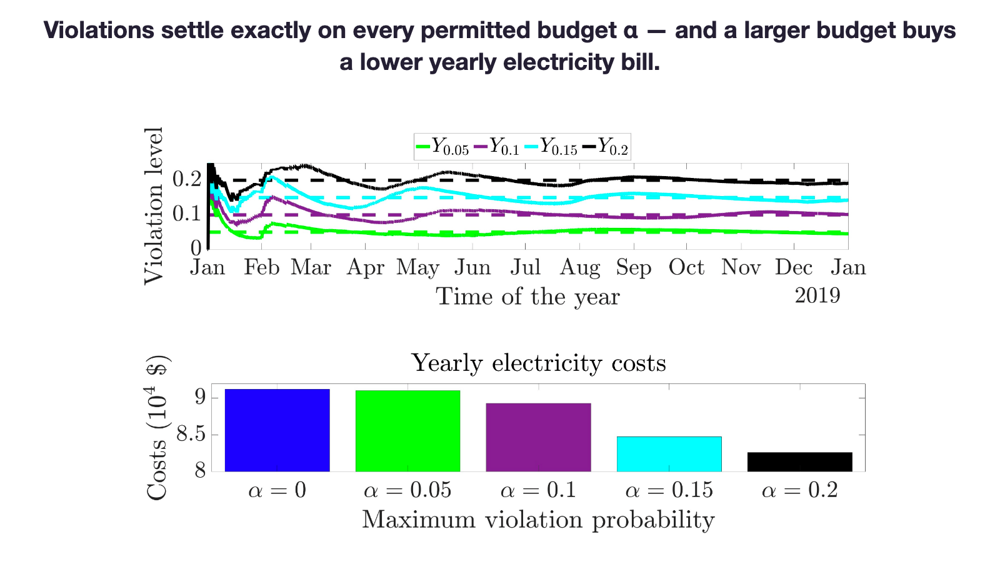
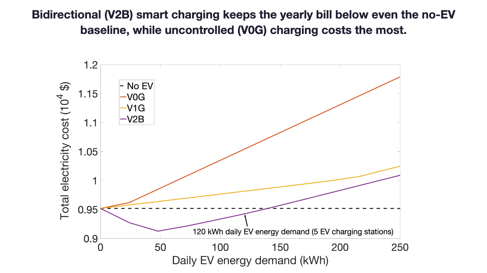

Avik Ghosh
Postdoctoral Researcher, Electrical & Computer Engineering
University of California San Diego
I design control and optimization algorithms that make power and energy systems cheaper and cleaner to run — using tools from model predictive control, constrained optimization, and machine learning. I build methods and algorithms that carry useful theoretical guarantees but stay simple enough to actually deploy in real life.
I am a postdoc in UC San Diego ECE, working with Prof. Yuanyuan Shi and Prof. Sujit Dey. I received my PhD from UC San Diego MAE in 2025, jointly advised by Prof. Jan Kleissl and Prof. Sonia Martínez. More about me →
I am on the academic job market for Fall 2027, and am seeking positions in India in Electrical, Mechanical, Energy Science, or Sustainable Energy Engineering departments.
Research
Full research statementThe common thread: operating and sizing energy systems near their economic optimum, with guarantees that handle realistic load, generation, tariffs, and uncertainty.
-

Current workCharging construction EVs with mobile charging stations
Construction EVs (CEV) are large and typically immobile while working, so sending them to a fixed charger mid-task is impractical; mobile charging stations (MCS) instead bring the energy to the site and top themselves up from the grid later. I am building machine learning models that predict the energy demand of individual construction activities from live UC San Diego sites; alongside spatio-temporal optimization algorithms that jointly schedule both work/charging of CEVs and MCSs. Our method reduces both operating cost and carbon emissions against state-of-the-art EV-MCS charging algorithms, and conventional diesel-powered equipment.
-

Dissertation projectBaseline-improved Economic MPC
An economic MPC framework that provably does no worse, in average asymptotic economic performance, than any reference trajectory handed to it — for generic deterministic nonlinear time-varying systems. It asks less than comparable results do: the reference need not be fixed in advance, only known online up to the present step, which is what actually happens in operation. On a real microgrid it lowered monthly electricity costs against both standard and state-of-the-art reference trajectories, and I am now extending the guarantees to stochastic systems.
-

Dissertation projectNon-conservative chance-constrained stochastic MPC
The goal is to operate an uncertain dynamical system as economically as possible while allowing a set budget for nominal constraint violations. Previous methods are conservative and require the distribution or statistics of the uncertainty; ours requires neither. I proved that our algorithm drives the asymptotic time-average of violations to exactly the permitted level for uncertain discrete-time linear systems. Applied to a realistic microgrid with uncertain load and solar, where the nominal constraints are bounds like 20–80% battery state-of-charge, our method cut electricity costs below both standard and state-of-the-art approaches while staying within the violation budget.
-

Dissertation projectSmart EV charging in commercial buildings
Through economic optimization I quantified how much V0G, and V1G/V2G smart charging can affect the total electricity bill of commercial buildings hosting EV chargers. I also derived an analytical framework that estimates those effects without solving a convex program at all, predicting how charging strategy, base load, layover period and charging demand move total cost and net load from nothing more than exogenous EV sessions, pre-EV load and tariff data. That gives microgrid operators a fast way to size site charging infrastructure before installing it.
Teaching and mentorship
Teaching pageI find particular joy in imparting knowledge: my aim is to help students build a rigorous command of mathematical tools, formulate technically sound research questions, and communicate their work to any audience. I currently mentor an ECE MS student who is a long-term intern in my postdoc lab, on the construction EV project, where we are extending our formulation to handle stochasticity. I am also leading a group of three former colleagues from my PhD lab where we are trying to extend the theory of our baseline-improved EMPC work to uncertain systems. I have been a teaching assistant for three UC San Diego MAE courses — Signals and Systems, Experimental Techniques, and Thermodynamics — covering control, instrumentation and thermal fundamentals for more than 500 students.
Honors and awards
- 2025 Third prize, Graduate Student Poster Contest, IEEE PESGM 2025.
- 2018 & 2019 GAABESU Research Award for outstanding undergraduate research.
- 2018 SURGE Fellowship, IIT Kanpur.
Professional service
Reviewer for journals
- IEEE Control Systems Letters (L-CSS)
- IEEE Transactions on Control Systems Technology (TCST)
- IEEE Transactions on Control of Network Systems (TCNS)
- Applied Energy
- Electric Power Systems Research
- Thermal Science and Engineering Progress
- iScience
Reviewer for conferences
- Learning for Dynamics and Control (L4DC)
Recent news
All news- December 2025 Our paper on Baseline-improved Economic Model Predictive Control for Optimal Microgrid Dispatch has been submitted to Automatica.
- August 2025 Our paper on Economic MPC with an Online Reference Trajectory for Battery Scheduling Considering Demand Charge Management has been accepted in IEEE Transactions on Smart Grid. [arXiv]
- August 2025 I started as a postdoc in UC San Diego ECE.
- July 2025 I won the third prize in the Graduate Student Poster Contest at IEEE PESGM 2025, for my work on EMPC for optimal microgrid dispatch. The poster is here.
- June 2025 I defended my PhD dissertation, which can be found here.